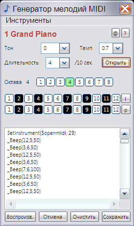

melodies_MIDI
Назначение
Генератор мелодий - игрушка созданная на этапах изучения программирования. Использует MIDI-устройство.

The_generator_of_melodies_MIDI - тоже что предыдущее но использует MIDI и воспроизводится к колонках ПК
Аналогично можно воспроизвести командной строкой, используя Start_melodies.bat, но в данном случае для такого способа необходимы файлы Midiudf.au3 и Array.au3, которые не являются файлами мелодий.